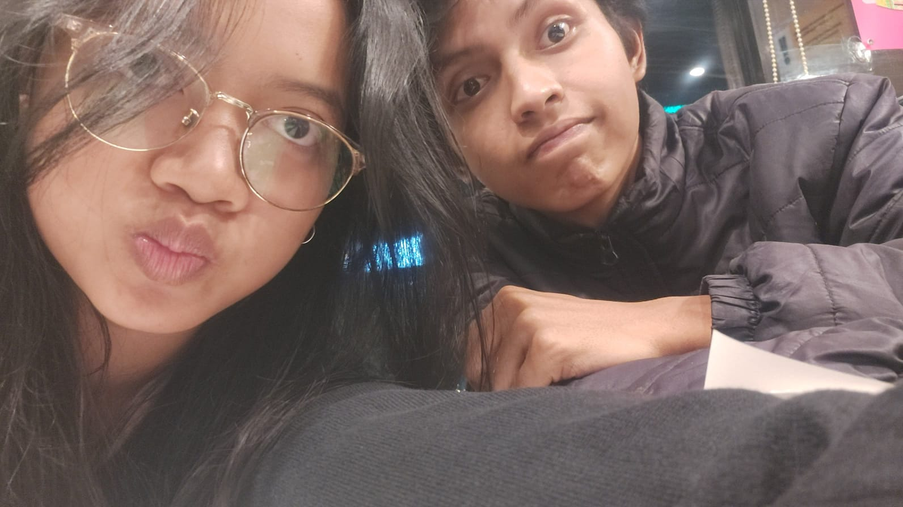

Kepada Yth: Saudari Ratna
Dari: Rizal
Kata Pengantar
Dengan hormat,
Proposal ini disusun sebagai bentuk keseriusan dan pertanggungjawaban atas pernyataan yang telah disampaikan sebelumnya. Dokumen ini memuat latar belakang, alasan, tujuan, serta manfaat dari hubungan yang diajukan, sebagai bahan pertimbangan bagi Saudari Ratna dalam mengambil keputusan.
Penyebutan nama “Ikan” dalam dokumen ini merujuk pada sapaan yang digunakan sehari-hari, yang didasari oleh sifat Saudari yang pelupa serta latar belakang pendidikan di jurusan perikanan. Sapaan tersebut digunakan sebagai bentuk keakraban yang telah terjalin lama.
Demikian pengantar ini disampaikan. Atas perhatian yang diberikan, diucapkan terima kasih.
BAB I — Latar Belakang
Hubungan antara pengaju dan Saudari Ratna telah terjalin sejak masa Sekolah Dasar. Pengaju menyampaikan ketertarikan sejak kelas 4 Sekolah Dasar pada tahun 2015.
Adapun kronologi hubungan adalah sebagai berikut:
- Sekolah Menengah Pertama, kelas 1: Kedua pihak sempat menjalin kedekatan. Pada masa tersebut, pengaju menyatakan bahwa hubungan lebih baik dilanjutkan sebagai pertemanan. Pernyataan tersebut menjadi kekeliruan yang disesali oleh pengaju.
- Akhir Sekolah Menengah Pertama, tahun 2018: Pengaju kembali menghubungi Saudari Ratna. Pada masa tersebut Saudari Ratna sedang memiliki ketertarikan kepada pihak lain dan memberikan respon yang tidak positif. Pengaju kemudian memutuskan untuk mundur dan mempersiapkan diri.
- Awal Sekolah Menengah Kejuruan: Pengaju kembali menyapa melalui media sosial Instagram dengan menanyakan kelanjutan pendidikan. Respon yang diterima tetap dingin, sehingga pengaju memutuskan untuk mundur sementara.
- Akhir Sekolah Menengah Kejuruan: Pengaju kembali menghubungi. Respon yang diterima belum membaik, sehingga pengaju kembali memutuskan untuk mundur.
- Awal masa kuliah / masa kerja pengaju: Pengaju memberikan komentar pada salah satu unggahan cerita Instagram Saudari Ratna. Respon awal berjalan baik, namun kemudian kembali dingin. Pengaju memutuskan untuk mundur.
- Pertengahan semester, masa kerja pengaju di Bandung: Pengaju yang pada saat itu bekerja di kota yang sama dengan tempat kuliah Saudari Ratna, kembali menghubungi. Pada kesempatan tersebut pengaju melakukan kesalahan dengan mengirimkan foto hasil suntingan yang tidak berkenan bagi Saudari Ratna, bertepatan dengan Saudari Ratna yang sedang menceritakan pengaju kepada rekan dekatnya. Saudari Ratna kemudian menyatakan menutup komunikasi. Pengaju sempat mempertimbangkan untuk tidak melanjutkan.
Pada bulan Juni, saat Saudari Ratna sedang menyusun skripsi, kedua pihak kembali bertemu setelah pertemuan terakhir pada tahun 2017 di masa Sekolah Menengah Pertama. Pertemuan tersebut berlangsung di halte dekat pintu tol Muhammad Toha dan dilanjutkan di Fore.
Setelah pertemuan tersebut, pertemuan-pertemuan berikutnya dilakukan hingga hubungan menjadi dekat seperti saat ini. Pada tanggal 1 November 2026, pengaju menyampaikan pernyataan resmi. Pernyataan tersebut diterima dengan syarat dan ketentuan yang berlaku. Salah satu syarat adalah pengunggahan foto bersama di cerita Instagram Saudari Ratna sebagai tanda peresmian, yang terlaksana pada tanggal 3 November atas izin Saudari Ratna.
Syarat terakhir adalah penyusunan proposal ini sebagai bentuk keyakinan, yang diajukan pada tanggal 4 November.
BAB II — Alasan
Adapun alasan pengaju menyampaikan proposal ini adalah sebagai berikut:
1. Ketertarikan yang konsisten sejak tahun 2015.
Saudari Ratna merupakan ketertarikan pertama bagi pengaju dan tidak tergantikan hingga saat ini. Selama rentang waktu 2015 hingga 2026, tidak ada pihak lain yang mengubah pendirian tersebut.
2. Karakter dan integritas Saudari Ratna.
Saudari Ratna memiliki sifat yang jujur dan apa adanya, termasuk dalam menyampaikan pandangan mengenai pernikahan dan keputusan untuk tidak memiliki anak. Kejujuran tersebut menjadi dasar kepercayaan pengaju. Selain itu, ketekunan Saudari Ratna dalam menyelesaikan pendidikan hingga tahap skripsi menjadi nilai tambah yang dihargai oleh pengaju. Seluruh saran yang diberikan oleh Saudari Ratna selalu dilaksanakan oleh pengaju sebagai bentuk kepercayaan.
3. Dorongan untuk menjadi pribadi yang lebih baik.
Hubungan ini mendorong pengaju untuk memperbaiki diri, menjadi lebih sabar, bertanggung jawab, dan serius dalam bersikap. Setiap penolakan yang diterima menjadi bahan evaluasi yang membentuk kedewasaan pengaju hingga mampu menyusun proposal ini secara formal.
BAB III — Tujuan
Visi: Menjalin hubungan yang berkomitmen hingga ke jenjang pernikahan dan kehidupan jangka panjang bersama.
Pengaju memahami pandangan Saudari Ratna yang menyatakan tidak ingin menikah dan tidak ingin memiliki anak. Pandangan tersebut dihormati dan tidak akan dipaksakan. Namun pengaju perlu menyampaikan secara terbuka bahwa tujuan jangka panjang pengaju adalah pernikahan. Saudari Ratna merupakan satu-satunya ketertarikan pengaju, ketertarikan pertama dan diharapkan menjadi yang terakhir. Pengaju berkeinginan untuk membahagiakan Saudari Ratna dan memberikan rasa aman dalam hubungan.
Status pemenuhan syarat:
1. Pernyataan tanggal 1 November 2026 — Diterima dengan syarat.
2. Pengunggahan foto di cerita Instagram tanggal 3 November — Telah dilaksanakan atas izin.
3. Penyusunan proposal tanggal 4 November — Merupakan dokumen ini.
BAB IV — Manfaat
Sebagai bahan pertimbangan, berikut manfaat yang diperoleh apabila proposal ini disetujui:
Manfaat 1: Pendamping dan pengingat dalam kegiatan sehari-hari.
Pengaju bersedia menjadi pengingat atas jadwal, barang, serta kebutuhan harian Saudari Ratna.
Manfaat 2: Rekan diskusi yang dapat dipercaya.
Pengaju bersedia menjadi pendengar, memberikan pendapat apabila dibutuhkan, serta melaksanakan saran yang diberikan.
Manfaat 3: Ketersediaan waktu dan kehadiran.
Pengaju berkomitmen untuk menyediakan waktu untuk pertemuan, pendampingan, dan kegiatan bersama.
Manfaat 4: Komitmen dan rasa aman.
Pengaju berkomitmen untuk memberikan kepastian, tidak meninggalkan hubungan secara sepihak, serta menghormati setiap keputusan Saudari Ratna.
Manfaat 5: Loyalitas yang telah teruji waktu.
Rentang waktu 11 tahun dengan berbagai penolakan yang diterima tanpa mengubah pendirian menjadi bukti konsistensi pengaju.
Manfaat 6: Hubungan yang suportif dan stabil.
Pengaju berkomitmen untuk mendukung pendidikan, pekerjaan, serta kehidupan pribadi Saudari Ratna secara berkelanjutan.
Penutup
Demikian proposal ini disusun dengan sebenar-benarnya sebagai bentuk keseriusan pengaju, Rizal, kepada Saudari Ratna.
Pengaju menyadari adanya kesalahan di masa lalu, termasuk pernyataan untuk berteman saja, ketidaktepatan dalam bersikap, serta pola datang dan pergi yang berulang. Atas hal tersebut, pengaju menyampaikan permohonan maaf dan komitmen untuk tidak mengulanginya.
Melalui proposal ini, pengaju memohon persetujuan Saudari Ratna untuk meresmikan hubungan sebagai pasangan yang berkomitmen, dengan tujuan jangka panjang menuju pernikahan.
Atas perhatian dan keputusan yang diberikan, diucapkan terima kasih.
Pengaju
Penerima
Pernyataan Persetujuan:
Silakan pilih salah satu:
Terima kasih, Sayang.
Proposal Nomor: 001/RZL-RTN/XI/2026 telah disetujui.

Terima kasih atas pertimbangannya.
Pengaju akan memperbaiki diri dan menghormati keputusan tersebut.